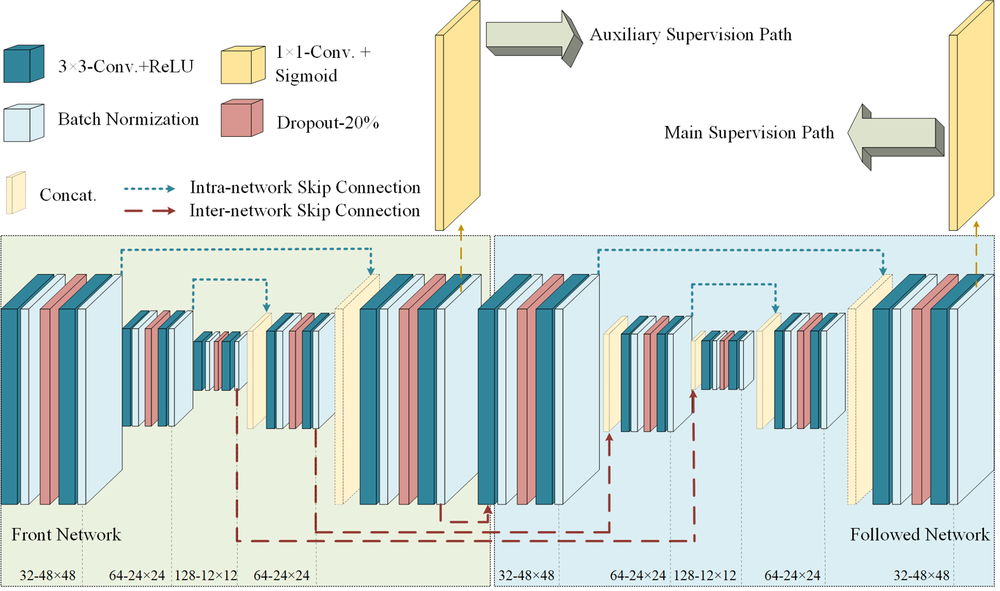
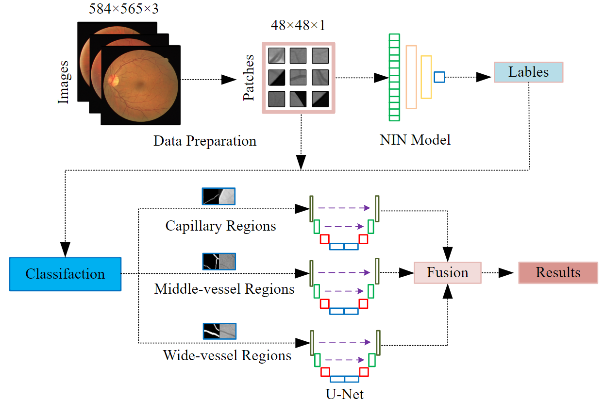
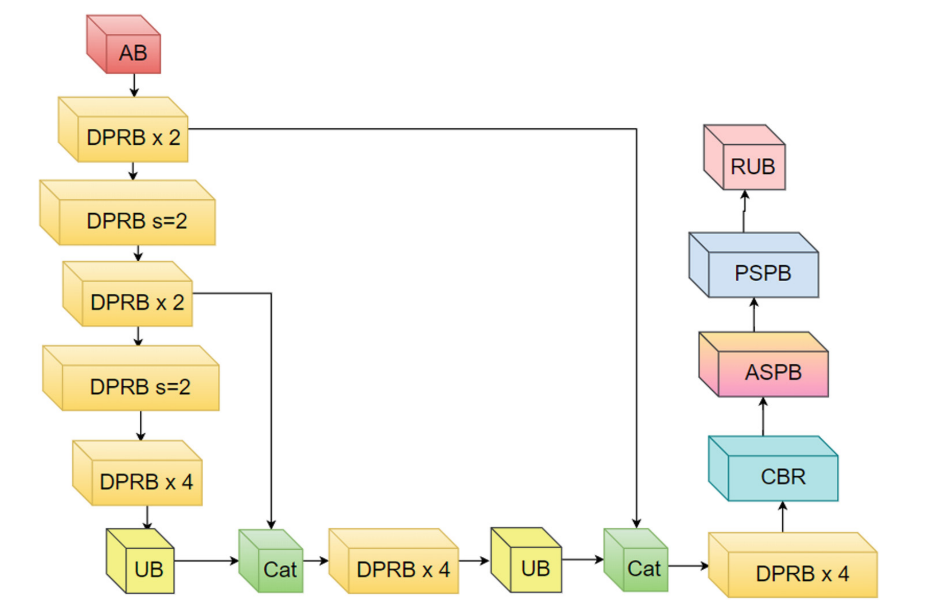

|
Yicheng(Eli) Wu 吴轶成PhD Candidate博学而笃志，切问而近思Faculty of Information Technology, Monash University |
Biography
Research Interests
My research interests include machine intelligence and computer vision, with a focus on Uncertainty, Interpretability and Human-like Reasoning of AI models through learning better representations. Previously, my research mainly focus on medical image processing, especially about the retinal vessel segmentation on color fundus images.
Education Background
- Present • PhD Candidate • Supervisor: Prof. Jianfei Cai.
- 2017.09-2020.04 • Master Degree • Supervisor: Prof. Yong Xia.
- 2018.11-2019.05 • Visiting Student • Supervisor: A/Prof. Weidong(Tom) Cai.
- 2013.09-2017.06 • Bachelor Degree • Supervisor Prof. Yong Xia.
Internship
- 2020.08-Present • Research Intern • DAMO Academy, Alibaba Inc.
- 2019.05-2019.09 & 2020.05-2020.07 • Research Intern • Deepwise AI Lab
Faculty of Information Technology, Monash University, Melbourne, Australia
School of Computer Science and Engineering, Northwestern Polytechnical University, Xi'an, China
Multimedia Lab, School of Computer Science, The University of Sydney, Sydney, Australia
School of Computer Science and Engineering, Northwestern Polytechnical University, Xi’an, China
News
- [2020.08.01] I will spend my gap year as a research intern at DAMO Academy, Alibaba Inc.
- [2020.05.12] I received the Master degree from Northwestern Polytechnical University, under the supervision of Prof. Yong Xia.
- [2020.02.27] One journal paper was accepted by Neural Networks (IF:5.785)
- [2019.06.05] One paper was accepted by MICCAI 2019
- [2018.05.31] I was selected as a joint master student through a rigid academia evaluation process organized by the China Scholarship Council (CSC)
- [2018.05.30] One paper was accepted by MICCAI 2018
- [2017.06.20] I received the Bachelor degree from Northwestern Polytechnical University, under the supervision of Prof. Yong Xia.
Representative Publications
|  | Yicheng Wu, Yong Xia*, Yang Song, Yanning Zhang, and Weidong Cai NFN+: A Novel Network Followed Network for Retinal Vessel Segmentation. Neural Networks, vol. 126, pp. 153-162, 2020(IF: 5.785) [Source] |
 |
Yicheng Wu, Yong Xia*, Yang Song, Donghao Zhang, Dongnan Liu, Chaoyi Zhang, and Weidong Cai. Vessel-Net: Retinal Vessel Segmentation under Multi-path Supervision. MICCAI 2019, vol. 11764, pp. 264-272, 2019 [Source] |
 |
Yicheng Wu, Yong Xia*, Yang Song, Yanning Zhang, and Weidong Cai Multiscale Network Followed Network Model for Retinal Vessel Segmentation. MICCAI 2018, vol. 11071, pp. 119-126, 2018 [Source] |
|  | Yicheng Wu, Yong Xia*, and Yanning Zhang Deep Classification and Segmentation Model for Vessel Extraction in Retinal Images. PRCV 2018, vol. 11257, pp. 250-258, 2018 [Source] |
|  | Donghao Zhang, Yang Song*, Dongnan Liu, Chaoyi Zhang, Yicheng Wu, Heng Wang, Fan Zhang, Yong Xia, Lauren O’donnell and Weidong Cai. Efficient 3D Depthwise and Separable Convolutions with Dilation for Brain Tumor Segmentation. AI 2019, vol. 11919, pp. 563-573, 2019 [Source] |
Awards
- NPU Excellent Postgraduate Thesis Award (Top 3%)
- NPU Key Seed Foundation of Innovation and Creation for Graduate Students
- Scholarship from China Scholarship Council (Joint Master Student)
- SJTU-USYD Research Conversazione Best Research Presentation
- Inspur Postgraduate Scholarship
- NPU Excellent Undergraduate Thesis Award (Top 7%)
Reviews
- Conference Reviews
- MICCAI 2019
- MICCAI 2020
Academic Activities
- [1] 13-17 October 2019: MICCAI 2019, Shenzhen, China (Poster)
- [2] 24 September 2019: MICS Webinar-MICCAI Conference (Online Oral Presentation)
- [3] 13-14 July 2019: Medical Imaging Computing Seminar (MICS 2019), Suzhou, China (Poster)
- [4] 23-26 November 2018: PRCV 2018, Guangzhou, China (Poster)
- [5] 16-20 September 2018: MICCAI 2018, Granada, Spain (Poster)
- [6] 14-15 July 2018: Medical Imaging Computing Seminar (MICS 2018), Nanjing, China
- [7] 25-27 May 2018: The 2nd International Conference of Digital Medicine, Guangzhou, China
- [8] 20-22 April 2018: The 8th Vision and Learning Seminar (VALSE 2018), Dalian, China
- [9] 02-03 December 2017: The 10th International Doctoral Forum, Xi’an, China (Oral Presentation)
- [10] 23-25 September 2017: The International Symposium on Image Computing and Digital Medicine (ISICDM 2017), Chengdu, China
- [11] 03 July 2017: Tsinghua University Summit on Artificial Intelligence and Future Medical Imaging, Beijing, China
- [12] 28-30 June 2017: Personalized Intelligent Living: Human, Robot and Nature, Beijing, China
- [13] 27-28 May 2017: Global Machine Intelligence Summit (GMIS 2017), Beijing, China
Chinese Foundations
[1] 基于深度学习的视网膜图像分割技术研究，主持，ZZ2019029
西北工业大学硕士研究生创意创新种子基金重点项目[2] 面向脑神经胶质瘤辅助诊断的医学影像智能分析技术研究，参与，JCYJ20180306171334997
深圳市科技创新委项目[3] 智能化冠状动脉分割及血管中线提取中的人工智能技术研究，参与，3102018zy031
中央高校基本科研业务费资助项目[4] 智能化冠状动脉堵塞辅助诊断中的人工智能技术研究，参与，2017M623245
中国博士后科学基金第62批面上资助
Chinese Patents
[1] 头颈血管中心线提取方法及装置，发明人: 潘成伟，贺家发，吴轶成，俞益洲
公开号：CN110517279A[2] 一种基于卷积神经网络的头颈血管分割方法及装置，发明人：潘成伟，吴轶成，王述琦，俞益洲
公开号：CN110827283A[3] 提高纸质医疗化验单手机扫描识别率的方法，发明人：钟冬，张靖，董辉，吴轶成，张甲栋，解飞
公开号：CN105930844A